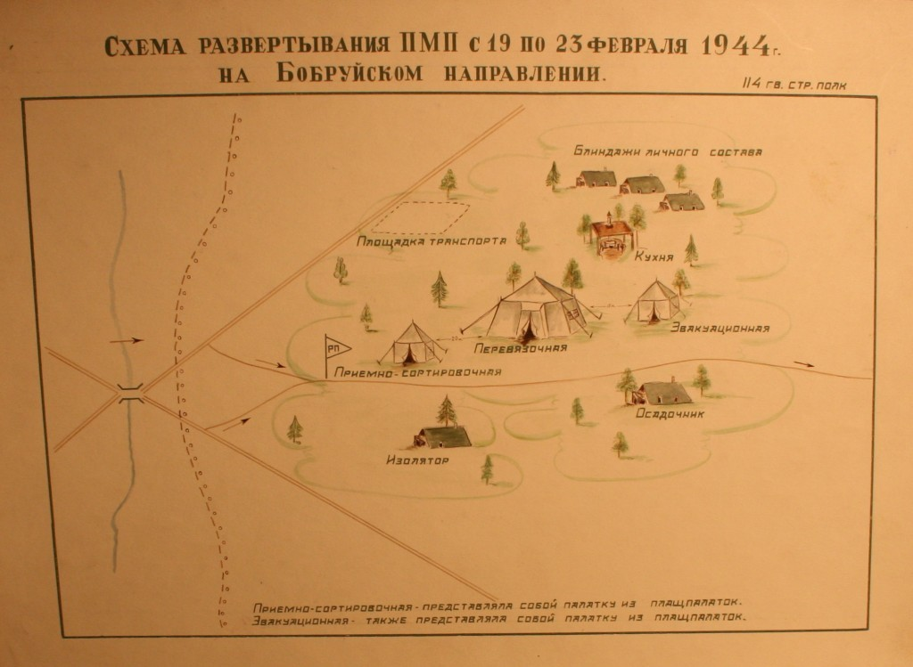
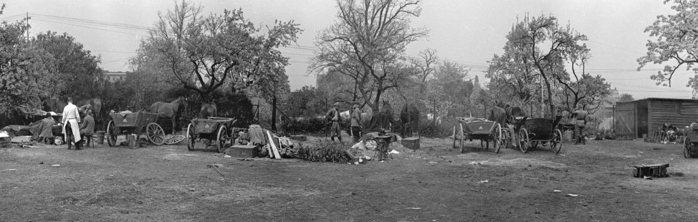
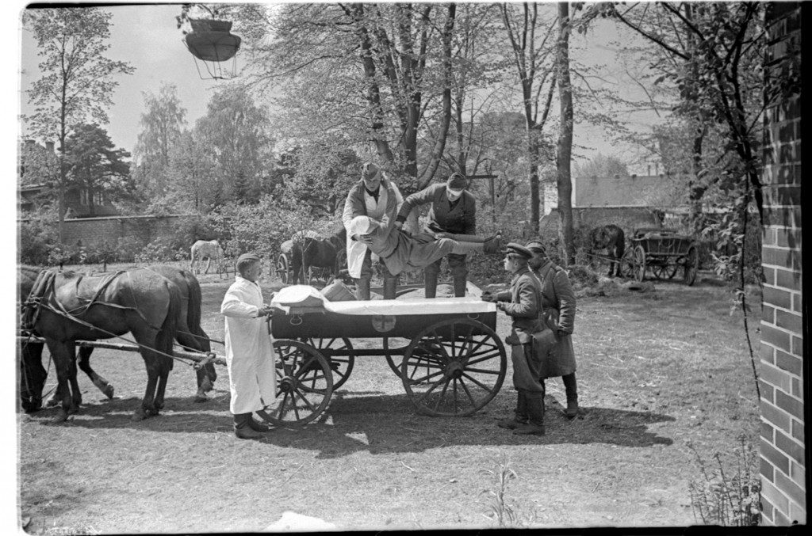

За сутки
0,31–0,69%
Санитарные потери в сутки
Берлин · май 1945
Весной сорок пятого военные медики работали там же, где шли бои — в Берлине и на подступах к городу. Пройдите путь тех, кто не оставил раненого без помощи.
Берлин. Май
Стремительное наступление и уличные бои создали новую плотность раненых. Медицинская служба отвечала не отдельными действиями, а цельной системой этапного лечения с эвакуацией по назначению.
Бой шёл в плотной городской среде: дома, подвалы, перекрёстки, непрерывное огневое воздействие.
В структуре поражений росла доля тяжёлых ранений верхней половины тела, головы и шеи.
Поток раненых требовал одновременной работы на разных уровнях: неотложно, квалифицированно, специализированно.
Ключом становились скорость решений и чёткая маршрутизация к нужному этапу.
Этапное лечение с эвакуацией по назначению: раненого везли не “дальше”, а туда, где помощь была наиболее своевременной и результативной.
Генерал Вейдлинг: «Исключительно маневренное руководство войсками; ясность замыслов, целеустремлённость и настойчивость».
Цепочка Пирогова
Путь раненого года был не хаотичным, а строго выстроенным: от поля боя к этапам помощи, где каждая минута меняла исход. Ключевым узлом оставалась медицинская сортировка — именно она определяла приоритет, объём помощи и дальнейший маршрут эвакуации.
Нажмите на карточку этапа, чтобы открыть пояснение.
Схема интерактивная: нажмите на пункт схемы, чтобы узнать подробнее.


Музейная витрина
Стремительное наступление советских войск и ожесточенные бои на улицах Берлина вызвали новый приток раненых. В структуре поражений преобладали тяжелые ранения верхней половины тела, головы и шеи.
В 5-й ударной армии 1-го Белорусского фронта удельный вес раненных в голову и шею достигал 18 % от общего числа раненых. Требовалось огромное напряжение сил и средств, чтобы оказывать неотложную, квалифицированную и специализированную хирургическую помощь в полном объеме и в оптимальные сроки.
Медико-санитарные батальоны были центрами первой хирургической помощи и приближали квалифицированную помощь к линии фронта: в них оперировали 50–60 % всех раненых, которым требовалось хирургическое вмешательство, а операции в ранние сроки создавали условия для успешного лечения на последующих этапах эвакуации. Во время Берлинской операции укомплектованность военными врачами на 2-м Белорусском фронте составила 89,0 %, на 1-м Белорусском — 89,2 %, на 1-м Украинском — 92,1 %: такая плотность кадров позволяла выдерживать непрерывный поток раненых в уличных боях.
В этой цепочке каждый этап решал судьбу человека: от первой операции вблизи боя до окончательного исхода лечения.


Доля от общего числа поступивших раненых.
Доля от числа раненых, проходивших лечение.
На ДМП удавалось оперировать до 52,7-53% поступивших раненых.
При открытом пневмотораксе на ДМП оперировали до 92,7% раненых.
Раненого направляли на тот этап, где нужное вмешательство реально выполнить быстрее и точнее.
Система работала как единый хирургический контур: не “перевозка дальше”, а последовательное лечение до конечного исхода.
Главный хирург фронта. Лично участвовал в организации и оказании хирургической помощи в Берлинской операции.
Главный хирург фронта. Руководил работой по тяжелым поражениям и срочным хирургическим вмешательствам.
Главный хирург фронта. Поддерживал непрерывность этапного лечения и эвакуации по назначению.
Руководители хирургической службы армий, обеспечивавшие масштаб работы на этапах лечения.
Безопасность раны
Средство применяли либо прямо в рану, либо пропитывали им тампоны/салфетки и накладывали на перевязку. Иногда обрабатывали окружность раны.
Цель — не допустить инфицирования. Главный инструмент асептики — стерилизация высокой температурой: кипячение, прокаливание сухим жаром, текучий пар или пар под давлением.
Непременное условие вмешательств: тщательное мытьё и обработка рук спиртом или спирт-таннином.
Именно с рук хирурга начиналась граница между риском инфекции и шансом на выздоровление.
В Великую Отечественную войну при перевязках и операциях применяли 4 группы предметов/материалов, обеспечивающих асептику: бельё, перевязочные материалы, лигатуры, растворы, а также инструменты и хозяйственные предметы.
Ударная волна
Контузия — закрытая травма мозга от ударной волны: нарушаются органы чувств, речь, двигательный аппарат и психика. Для контуженых создавались специализированные госпитали и отделения: после сортировки раненых распределяли по характеру синдромов и оказывали помощь по назначению.
Международное гуманитарное право
Лечение раненых и больных военнопленных организовывалось под медицинским контролем: часть проходила лечение в сохранённых немецких учреждениях, часть — в армейских госпиталях Красной Армии. Задача системы — лечить на месте до полного исхода и по возможности сокращать эвакуацию за пределы фронта.
После первичного распределения включался единый маршрут: от учёта и назначения учреждения — к лечению и контролю исходов.
Это путь через тишину палат и тревогу перевязочных: шаг за шагом раненого вели от учёта к выздоровлению.
Распределение по профилю поражения и состоянию.
Маршрутизация в подходящий лазарет или госпиталь.
Выдача медикаментов и перевязочных средств.
Лечение до выздоровления в пределах армейских и фронтовых баз.
Эти числа — не сухая статистика, а масштаб принятой боли: сколько раненых могли одновременно укрыть, лечить и возвращать к жизни.
до 2500 коек
крупнейшая клиническая база в системе лечения военнопленных
500 коек
приём и лечение раненых и больных военнопленных
420 коек
лечение под медицинским контролем армейской службы
500 коек
включена в единый контур организованной медицинской помощи
Эвакуация
Модель ГАЗ-51. Крытая полуторатонка, в кузове двухъярусные носилки для тяжелораненых.

В годы Великой Отечественной войны санитарные собаки использовались как ездовые и розыскные: предпочтение отдавали лайкам и овчаркам, для упряжек отбирали и крепких беспородных собак. Упряжки работали круглый год — доставляли раненых и медикаменты на передовых участках эвакуации; встречалось и буксирование лодок с ранеными.
Команды помогали действовать под огнём: «вперёд», «стой», «ложись» — и оставаться неподвижно до команды.
Собака находит раненого, приносит брингзель и подводит вожатого к месту — под огнём противника.
«Победа над временем и пространством… — вот значение транспорта» — Н. Н. Бурденко.
Хроника
Берлинская операция завершила войну на советско-германском фронте: в наступлении участвовали силы трёх фронтов, боевые действия тянулись 23 дня, штурм столицы шёл улица за улицей, дом за домом. Медицинская служба не отставала от войск — полевые узлы и госпитали разворачивались в городе, раненых доставали из подвалов и завалов.

Три фронта начали наступление; за 23 дня продвижение на запад достигло 100-220 км.
Войска 1-го Белорусского и 1-го Украинского фронтов замкнули кольцо. Уличные бои шли за каждый квартал.
На фоне ожесточенных боёв медслужба продолжала эвакуацию и хирургическую помощь без пауз.
После восьми дней уличных боёв поток раненых сохранялся, и система этапного лечения работала в полном объеме.
В Карлсхорсте подписан акт о безоговорочной капитуляции Германии; операция завершилась.
Финал Берлинской операции звучит не салютом, а благодарностью тем, кто возвращал людям дыхание и надежду.
Весной 1945-го в руинах Берлина военные медики делали невозможное: находили, оперировали, спасали. Тишина после штурма стала и их Победой.
Спасибо
врачам, фельдшерам, медицинским сёстрам и санитарам — за мужество, точность и милосердие под огнём.
8 мая 1945 года в Карлсхорсте подписан акт о капитуляции. К этой тишине вели и тысячи медиков, которые день за днём отвоёвывали жизни.
Подвиг медиков — в отваге нести помощь сквозь огонь.
Медпомощь разворачивали сразу за наступающими частями.
Санитары и сёстры выносили раненых из подвалов и завалов под огнём.
За тишиной после штурма стоят тысячи спасённых ими жизней.
Память о Берлине 1945 года — это не только память о штурме. Это память о милосердии, которое не отступило даже там, где шла ожесточённая война.